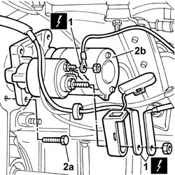
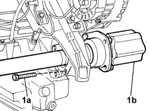
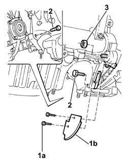
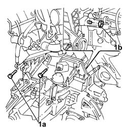
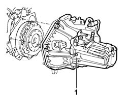
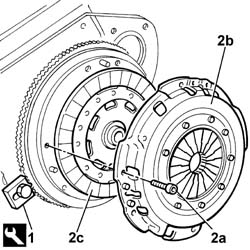
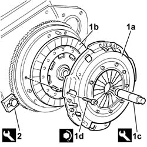

1004D10 POWER UNIT (manual gearbox), removed - Separate and reassemble
- Path
- Procedures > 10 ENGINE > 1004 ENGINE AND POWER UNIT > 1004D REMOVE ENGINE AND WASH > 1004D10 POWER UNIT (manual gearbox), removed - Separate and reassemble
- Kind
- repair procedure (removal / refitting; the operation number is the code)
- Applies to
- engines: 2.0 TB, 2.4 20V; all production periods
- Interactive page
- https://sloeber94.github.io/elrnDB-lThss/en/#/74567
Applies to: engines: 2.0 TB, 2.4 20V; all production periods
 Removing
Removing
 Refitting
Refitting1. Disconnect the electrical connections from the starter motor.
 | Description | Connector |
|---|---|---|
1 | Starter motor | A020A |
| Description | Connector |
|---|---|---|
1 | Starter motor | A020B |
2. Undo the bolts (2a) and remove the starter motor (2b).

Applies to: engines: 2.0 TB, 2.4 20V; all production periods
- Undo the gearbox and differential oil drain plug.
1. Undo the three bolts (1a) and remove the intermediate driveshaft (1b).

Applies to: engines: 2.0 TB, 2.4 20V; all production periods
1. Undo the bolts (1a) and remove the lower flywheel protection (1b).
2. Undo the bolts fixing the gearbox-differential unit to the crankcase sump.
3. Undo the nut fixing the gearbox-differential unit to the cylinder block/crankcase.

Applies to: engines: 2.0 TB, 2.4 20V; all production periods
1. Undo the upper bolts (1a) and the nut (1b) fixing the gearbox-differential unit to the cylinder block/crankcase.

Applies to: engines: 2.0 TB, 2.4 20V; all production periods
1. Separate the gearbox-differential unit from the engine.

Applies to: engines: 2.0 TB, 2.4 20V; all production periods
1. Fit the flywheel lock.
 | Description | Code | Function |
|---|---|---|---|
1 | Counter-torque | 1.860.846.000 | Engine flywheel lock |
2. Undo the bolts (2a) and remove the pressure plate (2b) and the clutch disc (2c).

Applies to: engines: 2.0 TB, 2.4 20V; all production periods
Refitting
Removing1. Position the pressure plate (1a), complete with clutch disc (1b) in its housing using the tool (1c) and secure it tightening the bolts (1d) to the recommended torque.
| Description | Code | Function |
|---|---|---|---|
1c | Clutch locating tool | 1.870.447.000 | Tool for centering clutch plate on engine flywheel |
 | Value - daNm | Fastening | Component | Ø |
|---|---|---|---|---|
1d | 2.8 | Bolt | CLUTCH ASSEMBLY | M8 |
2. Remove the flywheel lock.
| Description | Code | Function |
|---|---|---|---|
2 | Counter-torque | 1.860.846.000 | Engine flywheel lock |

Applies to: engines: 2.0 TB, 2.4 20V; all production periods
- Reposition the gearbox-differential unit and secure it tightening the bolts to the recommended torque.
| Value - daNm | Fastening | Component | Ø |
|---|---|---|---|---|
. | 8 | Bolt | MANUAL GEARBOX/DIFFERENTIAL | M12 X 1.25 |
| Value - daNm | Fastening | Component | Ø |
|---|---|---|---|---|
. | 5.5 | Bolt | MANUAL GEARBOX/DIFFERENTIAL | M10 X 1.25 |
- Fit the lower engine flywheel guard and secure it using the bolts.
- Reposition the intermediate driveshaft in its housing and secure it tightening the bolts to the recommended torque.
| Value - daNm | Fastening | Component | Ø |
|---|---|---|---|---|
. | 0.8 | Bolt | INTERMEDIATE DRIVE SHAFT | M6 |
- Fit the starter motor and secure it tightening the bolts to the recommended torque.
| Value - daNm | Fastening | Component | Ø |
|---|---|---|---|---|
. | 7 | Bolt | STARTER MOTOR | M8 |
- Connect the electrical connections from the starter motor.
| Description | Connector |
|---|---|---|
. | Starter motor | A020A |
| Description | Connector |
|---|---|---|
. | Starter motor | A020B |